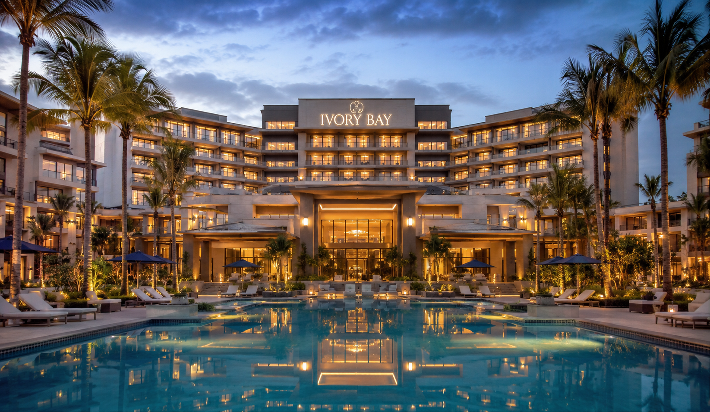

Our Story
Ivory Bay was created to bring modern luxury hospitality to Ethiopia while reflecting its warmth and culture. For over 15 years, we have provided elegant accommodations and a seamless booking system for both local and international guests. We solved the lack of high-end, easily accessible hotels by offering comfort, professionalism, and services designed for foreign visitors and locals alike. we also represent Ethiopian culutue with our exquisite cultural cuisines that we offer.Today, Ivory Bay stands as a leading hospitality brand in Ethiopia, combining modern elegance with authentic Ethiopian hospitality. Our vision is to grow into a globally recognized African luxury hotel brand representing excellence and innovation.
OUR CEO
Rachel Green, the founder and CEO of Ivory Bay, dreamed of creating a hotel that blends luxury with genuine comfort and warmth. She studied hospitality and interior design, then traveled to learn what makes hotels truly memorable. At 25, she turned her vision into reality by founding Ivory Bay, focusing on elegant design, personalized service, and guest comfort. Despite challenges, she built a brand that reflects her belief that luxury should always feel personal and welcoming. Today, she continues to lead Ivory Bay as a modern symbol of comfort, elegance, and timeless hospitality.

OUR STAFF
The hospitality team at Ivory Bay is dedicated to creating an atmosphere of comfort, elegance, and genuine care for every guest. Our staff is professionally trained to provide attentive service while maintaining a warm and welcoming environment. Whether assisting with accommodations, dining, or personalized guest requests, every team member works with passion and attention to detail. Their commitment to excellence is what transforms every stay at Ivory Bay into a memorable luxury experience.